Knowing and understanding the stages of editing in JOSM
Saving OSM file
In a previous session, you have already installed and configured JOSM as well as master basic operations in JOSM such as drawing points, lines, and polygons.
You also used menu presets to add attributes to an object you created on the map. Finally, you are to the point where you can digitize and edit features on the map using JOSM.
In this session, we will look closely at the JOSM interface and learn how to stage the map editing process in JOSM and also how to maximize the tools that exist in JOSM.
In this section, we build on our command of basic tools and techniques to draw map features in JOSM and look closely at some advanced drawing tools.
To follow along with this section and practice using advanced JOSM tools, please download in Edit tools then open JOSM and point to the edittools package. It will look like the figure below:
JOSM has some additional tools to make it easier to create high quality lines and polygons. These tools are found in the Tools menu at the top of
JOSM.
A quick glance reveals many functions that can help when drawing lines and polygons, and editing objects on the map. We discuss the most important of those tools
in this section.
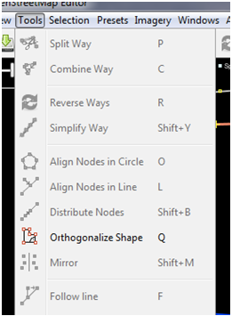
Options in JOSM Tools Menu
In applying the functions in this menu, you first must select a point, line or polygon in the map window. The sample file you already downloaded contains various elements that are labeled the names of different tools on the menu.
Try to select one of the elements in the file. Then go to the Tools menu and click on the function identified on the feature you have selected.
For example, click on the asymmetric circle.
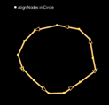
Next go to the Tools ‣ Align Nodes in Circle
The irregular circle will be aligned and symmetrical.
Experiment with each of the tools using this sample file. A description of some of the tools is provided below.
Split Way: This allows you to divide a way into two separate ways. This is useful if you want to add the attribute to the different road, such as bridge. To use this function, select a point in the middle of way that you want to cut, then select Split Way from the Tools menu, and your way should be split into two ways.
Combine Way: This is the opposite of Split Way. To combine two ways into one way, they have to share a single point. To use this function, select the way you want to combine. You can select more than one object by holding the SHIFT button on your keyboard and click on each way. When you have selected the both of the ways, select Tools ‣ Combine Way.
That if you want to combine ways that have different directions, you will see this warning:
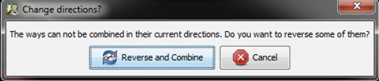
If the ways are connected, they can be aligned in the same direction by selecting Reverse and Combine.
Reverse Way: This will change the direction of a way. All ways in OSM have a direction, shown in JOSM with an arrow pointing in the direction of alignment. Direction is usual not a problem, except in cases where the one way roads and river that flow in a certain direction. In this case, you need to reverse the way so that it flows in the right direction.
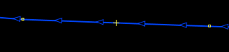
Simplify Way: If your way has too many points in it and you want to make it simpler, this operation will remove some points from a way without adversely affecting the shape.
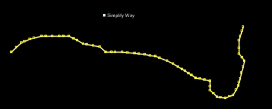
The example of ways which will be simplified in JOSM¶
Align Nodes in Circle: If you try to make a circle, you draw a circle as best you can then select the object. This function will help distribute the points to make a perfect circle.
Create Circle: Alternatively, you can use this tool, it will make a perfect circle. Draw a way that represents the diameter of your circle.
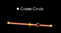
Align Nodes in Line: This function will align a series of points into a straight way. With long ways it is best to select sections of the line to straighten. Be careful as this does have the tendency to shift the line a little bit.
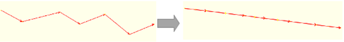
The Concept of Making A Way That Turned into A Straight¶
Orthogonalize Shape: This function is more useful to draw a regular shape such as building. After you draw an area, this function will reshaped it to have square corners.
Unglue way: This tool allows you to detach the nodes that are connected. For example, the common error is for a road shares the point with the corner of a building. Of course roads don’t run into buildings usually, so this is a mistake, and you can unglue the objects from one another.
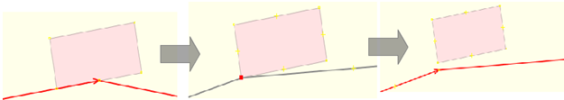
The common question is how to rotate a way or a polygon after the object was drew.
To rotate an object, first you need to select the object
After editing in OpenStreetMap, you will realize that you are spending a lot of time with each click on the menu and submenu. To overcome this, JOSM has a shortcut button that substitutes the lengthy menu process.
You can simply select the object directly and press the button in your keyboard. Here are the most important shortcut keys.
After you have acquired some skill in editing the map, you may want to use the additional JOSM features to improve your mapping skills. JOSM allows you to install various plugins, extending the functionality of the software.
In this session, we will look some of the more useful plugins that exist for JOSM.
buildings_tools: If you draw a lot of buildings, this tool will make the process faster and easier. Building Tools Plugin is useful to digitize the building. It allows you to digitize one side of square building and extend the shapes with ease, saving mouse clicks and saving time. After the plugin is installed, you will see the new button in left side of JOSM, that look like this:
Open JOSM and make a new layer
Select building_tools and double click to draw a way on the map
Then drag your mouse and click again to draw a square as shown in the figure below
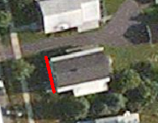
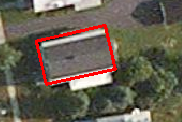
The process of drawing a building with building tools plugin¶
The tool not only creates a square with a triple click, but it also will automatically apply the building=yes tag into the polygon.
Creating Complex Buildings
You can also create building more complicated buildings by first drawing some overlapping buildings and merging them together.
Draw two buildings which overlap, so that they form a L shape.
Select both buildings (hold SHIFT to select more than one object).
Go to Tools > Join overlapping areas or hold SHIFT+J in your keyboard.
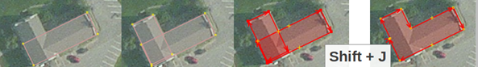
DirectUpload: If you collect a lot of GPS tracks and you want to save to the OSM database, this plugin will make it easier for bulk uploads.
editgpx: If you want to upload the GPS track from Garmin device, you may need to use this plugin. Due to a technical glitch, OSM will not receive GPS track that have been saved on an external memory card in Garmin, but this plugin can fix the file so they can be uploaded.
fieldpapers: This plugin loads Field Papers that have been scanned in JOSM.
imagery_offset_db: This plugin for mappers who discover areas where the Bing satellite imagery is not aligned. This will be explained in more detail in the next chapter.
mirrored_download: With this plugin, you can download OSM data with a wider area to edit.
print: To add Print function, if you want to print an area quickly and where it need not look very good.
utilsplugin2: To add additional tools and menus in JOSM.
If you haven’t done so already, install the plugin shown in the figure below following the instructions for JOSM Plugins.
Create new layer and experiment with some of the new tools. We will explain some of the new tools that are very useful:
Add Nodes at Intersections: This tool is very useful to add a missing node in the selected way intersections. It’s good practice that the way should have common nodes where they intersect.
Copy Tags from Previous Selection: This function is very useful for copying a tag easily. Suppose you want to create a lot of objects with the same tagging scheme. Click on an object with the tagging scheme you want to apply and press SHIFT+R to copy a tag from the previously selected object. You can repeat this process for all objects that you want to apply a tag. Remember that the tags will be copied from the previously selected object, so if you click on an object that has not been tagged the copy function will have no effect..
Add Source Tag: This tool simplifies adding a source tag, given that the last specified source will be added as source tag to your object. You can insert source with just one click.
Replace Geometry: This tool is very good if you want to improve the drawing of an object, but retain the history, the attribute and the object ID. Example, if you find a complex building drawn in a way that is not appropriate, you can draw the object again, select the old object and new object, select Replace Geometry to transfer all of the above information.
One of the selection tools which we use frequently is Unselect Nodes: This tool deselects all points.
This can be useful if you draw a square to select a lof of objects, but you don’t want to select a point that contains all the lines and polygons.
An example is shown in the figure below.
There are some common mistakes that mappers make when they start using OpenStreetmap. In this chapter we’ll identify a few of the most frequent errors and offer some tips for better mapping.
When you are creating polygon and line that are not supposed to be connected, make sure that they are not merged together by sharing a node.
For example, highway nodes should not be snapped to buildings, because no one likes a road that leads directly into a wall! If you want to disconnect two or more objects that share the same node, select node and go to Tools -> Unglue Ways or press G as shown in the figure below.
Roads that intersect should always share a node as shown in the figure below. If they do not share in a common node, then the computer has no way of knowing that the roads actually connect to each other.
Therefore if you see the roads are not connecting to each other, please fix it by selecting the node from the road that you want to connect then go to Tools -> Merge Node or press M in your keyboard and drag it.
A common error is to have overlapping polygons when the objects they represent do not overlap in real life. A building can not overlap to another building.
For example, a polygon drawn to represent a park outside a building should not overlap with the building.
Instead it should be drawn next to the building.
There are some exceptions to this rule, such as school. Within a school yard you might identify individual buildings using polygons, yet you also might want to create a polygon around the entire school yard.
In this case it is fine for the polygons to overlap, but the rule to follow here is to make sure that the buildings are completely inside the landuse polygon.
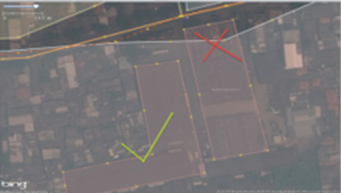
The example of overlap building that is true and false¶
The example of building given a false tag (left) and true tag (right)¶
A common error is adding tag on a node that makes up part of a line or polygon. This often happens when someone draws a building and then select one of the nodes
that participate in the object.
The way to avoid creating an improper way is by clicking directly on the line.
Intersection that meets in road corner/ intersections should be separated¶
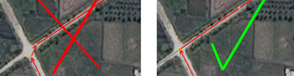
The wrong intersection (left) and true intersection (right)¶
When roads intersect each other at road corners, you should not create a curved line at intersection. Line should form an angle of 90° that represents the actual
conditions.
To fix this, select an object and tag the object in accordance with the information that describes the object. Alternatively, the object can be removed if the
object is in error.
Line near, or with another line but they are not connecting¶
The figure below shows an example of lines that should connect but do not.
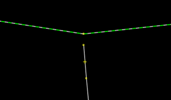
The example of lines not connecting to each other¶
To fix it, you can select a node from the line that you want to connect, and then select the Draw Node tool to add a node at the end of the line.
Alternatively, you can use the Merge Node tool (if the front line is not connecting, that is a node), the following stages are:
Select the two adjacent nodes, which is in the second line you want to connect
Select Merge Node > Tools menu
If the end of the first line is not yet connected, and there is not a point to connect to in the second line, you can use the
Tools > Join Node to Way.
To fix this, you need to use the latest satellite imagery so you can determine which objects are correctly placed. If you are already using the latest imagery,
simply move the object to the appropriate place and delete any obsolete features.
Editing OpenStreetMap with JOSM is similar to editing with the iD editor. But because JOSM is a desktop application, it works a little bit differently.
The general process of editing and adding to OpenStreetMap with JOSM will always follow this pattern:
Download the current map data from OSM
Edit it using satellite imagery, GPS or Field Papers
Save changes to OpenStreetMap
In the following sections, we explore this pattern in greater detail.
The first step is to download the data for the area of interest that you want to map. Remember that you need to do this every time that you want to make changes
to the map, because the map is often being updated by other users and you will want the latest data.
Click on File in the top left corner of JOSM and click Download from OSM. This will open up the download window.
You can access this window more simply by clicking on the download button, shown here:
When the download window opens, you should see a map with a pink box drawn on it. If you don’t see the map, click on the tab marked
Slippy map as shown in the figure below.
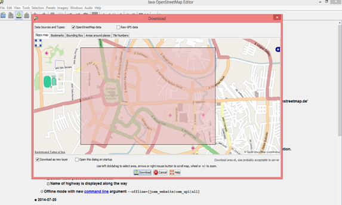
3. The pink box represents the area of interest that we would like to download for editing. Use your mouse to pan and zoom to an area that you know very well,
such as your hometown or neighborhood. The controls are the same as in the JOSM map window. The right mouse button lets you drag the map, and your scroll wheel
allows you to zoom in and out.
4. Draw a box around the area that you want to download. To draw a new box, click on the map, hold your left mouse button down,
and drag your mouse to create a box. Release the mouse button to finish drawing the box.
5. When you are satisfied with the size and location of the box, click Download at the bottom of the window. JOSM will fetch the data for this area
from OpenStreetMap and open it in your map window for editing.
If you followed along when we added our first points with the iD editor, you remember that beneath the map data there was a satellite image that helped us
identify objects on the ground. This imagery was licensed from Microsoft Bing, which generously provides its imagery for OpenStreetMap users to use as a reference
while contributing to the map.
To add the Bing satellite imagery in JOSM, click Imagery on the top menu of JOSM and selecting Bing Sat.
To this point, we have been doing some pre-edit steps in JOSM starting with downloading OSM data and adding satellite imagery as the background. Next, we’ll edit
the map and add new objects on it.
You might rather see more or less data in your editing window. What you see will depend on the size of your editable area.
Please note, the data you are working with is real data and the nodes, lines and polygon in your map area represents actual objects on the ground.
Use same steps that you have learned before to add nodes to your map. If you see any error in your object, please fix it.
2. You do not need to hurry, take your time to understand the steps. If you are not really sure about the outline or identify of some object, you should leave
these off the map.
3. If you want to move nodes, lines, or polygon, you can use Select Tools. Click the object that you want to move and drag it to where
it should be.This step could be used to fix location of objects which have wrong position.
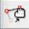
4. Use Draw Tool to draw nodes, lines, and polygon. Add description and information of your object using Presets menu.
You have done this in previous chapter.
You might be notice that everytime you add new object to JOSM, your object will be added to layer panel at right side in JOSM. Your Panel Layer
should looks like this:
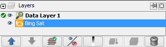
Every item listed is a different source of data that you have open in JOSM. In the example shown in the figure above, Data Layer 1
is the OpenStreetMap data that we are currently editing.
BingSat layer is satellite imagery that is used as a background in JOSM.
Those layers that are used as background images help us identify and digitize objects in JOSM. These include satellite imagery, but also GPS tracks
and scans of Field Papers.
We call these layers base layers and our OSM data layer is main layer that we use to digitize and edit, add objects, move objects, etc.
To move a layer, click on that layer in Layers panel and click up or down blue arrow to move it.
To hide a layer, select layer with your mouse and you can click Show/Hide button:
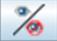
You should see your layer that you select will be hide in JOSM. If you want to show it again, you can click the show/hide button and
it would be automatically show in JOSM.
You also can delete a layer using the delete button:
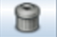
4. Last, it is very important to know that you only can edit the Active layer in JOSM. If you can not edit your map in JOSM,
it might be because your layer is not active. Most layer, such as GPS point, Field Papers, and Aerial Imagery cannot be edited.
The only layer that can be edited are data from OpenStreetMap, which are usually called Data Layer 1.
To make a layer active, select it in the Layers panel, and click on the Activate button:
Tag is just like a label that you put to an object. For instance, if we add an object in some area and that object is a mosque and its name is
Masjid Raya Sabilal Muhtadin; amenity that we can use is place of worship and mosque as we know, is Muslim place of worship.
Therefore, you can add a religion=Muslim tag to the mosque as well as any other information you can supply about that object.
The tag will be saved as text, specifically as a key and value combination. In OpenStreetMap, you can see all information about an objects
in properties panel at right side of your JOSM window as shown in the figure below.
You can add, edit, and remove tags directly from properties panel. But, tags are automatically defined in English and sometimes it is confusing especially
if you do not understand English. Hence, non-English speakers may find it is easier to manage tags using a Preset Menu. Needless to say, when you add or edit tag,
the attribute of object will be change as well.
To edit tag of an object, first select the object.
You can edit the tag either: (1) Using Presets Menu, or (2) Edit Directly in properties windows at right side of your JOSM.
The third and final step to complete our edits is to upload changes we have made to the OpenStreetMap database. To save the changes,
you must be connected to the internet.
1. Click File on the top menu, and then click :guilabel: Upload Data. This will open up the upload window. You can access this window more simply by
clicking on the upload button, shown here:
2. The window that appears shows a list of the objects that you are adding and the objects you are modifying or deleting. In the box at the bottom you are asked
to provide a comment about the changes that you are making. Type in here a brief description of your edits.
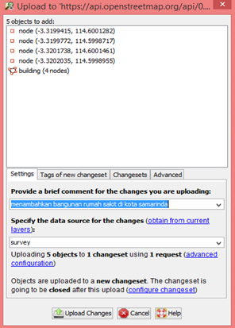
Click Upload Changes
Wait a few seconds for your changes to be uploaded, and then you are finished! You have edited OpenStreetMap!
When you edit using JOSM, you should download, edit and upload your changes at regular intervals. Do not be afraid to upload your changes several times during an
editing session. This insures your changes upload to OSM database completely and you face less risk of losing your work.
There are some cases where you have not finished your work, or your internet connection may be suddenly turned off.
If that happens, you can save your work locally in JOSM. These are the steps to save your work:
1. To save your OSM file, make sure your layer active. Click File > Save. Choose your location in your computer and give a name to your file.
You also can save your file by click this button:
You can close your JOSM and your works has been saved. When you want to open your file, open JOSM and go to File > Open.
You should see your changes now appearing on the map! If you don’t, try pressing CTRL+R to refresh the web page. Sometimes the map doesn’t update properly and needs to be reloaded.
What if you don’t see your changes? Don’t worry, it may take a few minutes for the changes to be shown on the map. Also, check your additions in JOSM to make sure that you added them correctly. A good general rule is, if your point has an icon in JOSM, then it should be seen on the main map at the OpenStreetMap website.
Contributing to OpenStreetMap is easy to learn, but difficult to master.
Everybody makes mistakes, but the system works because even when one person does something the “wrong” way, there are always other mappers ready to help and fix errors.
As you map more and more, the process will continue to get easier, and you will learn the “proper” way to do things. This chapter is devoted to helping you make quality contributions to OpenStreetMap.
We will begin by discussing various editing techniques in JOSM that will improve your workflow, and how to avoid common mistakes that beginning mappers make.
Lastly, we will then discuss the JOSM validator tool, which is an automated way of checking for errors.
There is a stage when you upload your work to OpenStreetMap when you get a window notification as in the figure below:
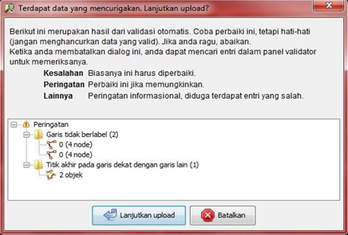
This is the way JOSM tells us that something is wrong with our data and it needs to be fixed before we upload it to the server.
JOSM comes with a validation tool that does an automated analysis of possible mistakes. This is useful for finding errors that you may have overlooked. When you run the validation tool, it returns two types of problems:
Errors: These are important to fix, and you should not ignore these. Examples of errors include duplicated objects or overlapping lines and polygons.
Warning: These are problems that are important to fix, but in some cases, they are tolerable.
One thing to note is that if you download a large area of the map and run the validation tool, you may get a very long list of errors and warnings.
This is because the validation tool works on the whole map in your editing extents, –not only the changes that you have made.
So you may see mistakes that other mappers have made which you are free to fix or ignore. But the validation tool gives you the opportunity to look at the mistakes one by one and evaluate them.
Download some area in JOSM. If you do not see Validation Result at right side panel in your window, tick on the blue checklist icon from the left panel in your JOSM window as circled in the figure below.
Ensure that nothing on the map is selected. If you run the validation tool with anything selected, it will only validate what you have selected, and not the whole map. However your mouse in the validation window and click Validation
The map will change and any warnings will be circled in yellow, errors in red. In the Validation Results window, as shown in the figure below, you will see a list of warnings and errors, if there are any.
Error should almost always be fixed. You can zoom to an error, by right clicking on it in the window and selecting Zoom to Problem. Then you can fix the mistake manually.
5. Some errors can be automatically fixed, such as Duplicated node errors. You can click on the folder for these types of errors and click the
Fix button in the window. Many errors, however, need to be corrected manually.
Usually there are many more warnings than errors. By giving you a warning, JOSM is telling you that it is probably a mistake, but not always. So you will need to use your judgement to see if it is an error or not.
If you select a warning from the list and decide that it is not a problem, click Ignore and it will be removed from the list.
You can re-run the validation tool at any time by clicking Validation.
Awesome! You have successfully learned how to edit OpenStreetMap in JOSM and how to maximize some tools in JOSM to help us in editing our map.
You also know about mistakes and errors that should be avoided when editing in JOSM.
In next chapter, we will learn how to use Global Positioning System (GPS) to collect data when doing a field survey and how to add it to OpenStreetMap.